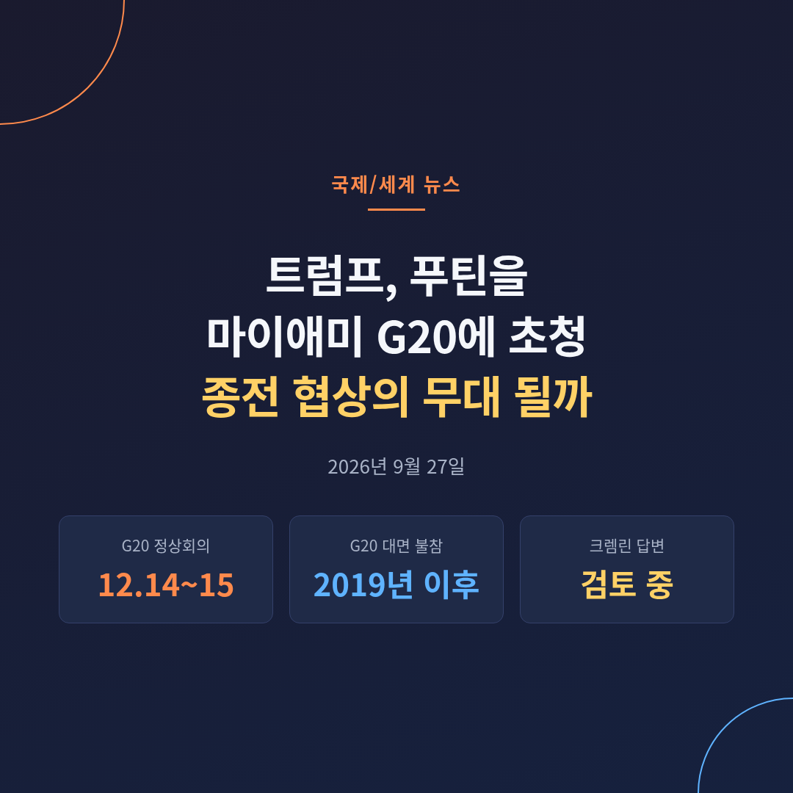
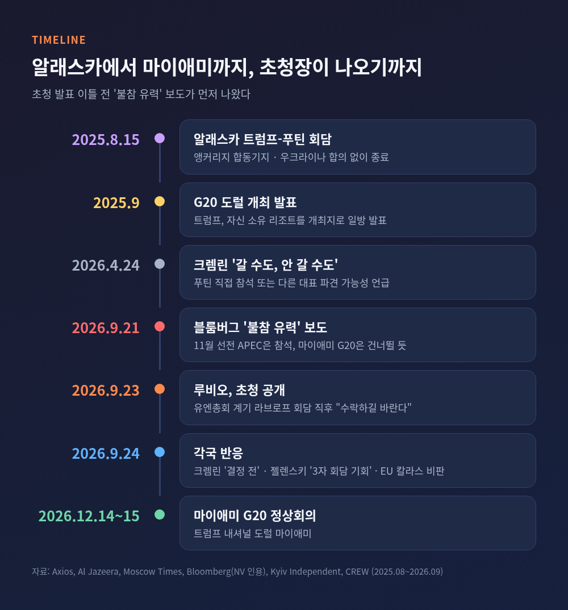
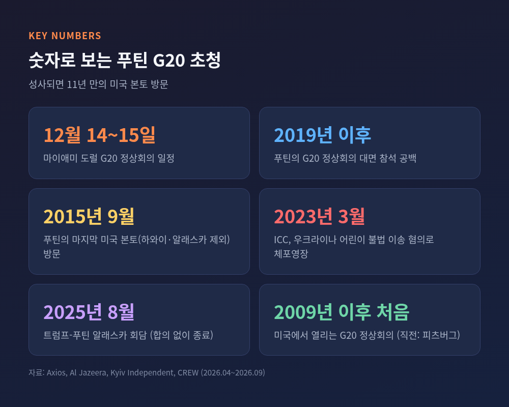
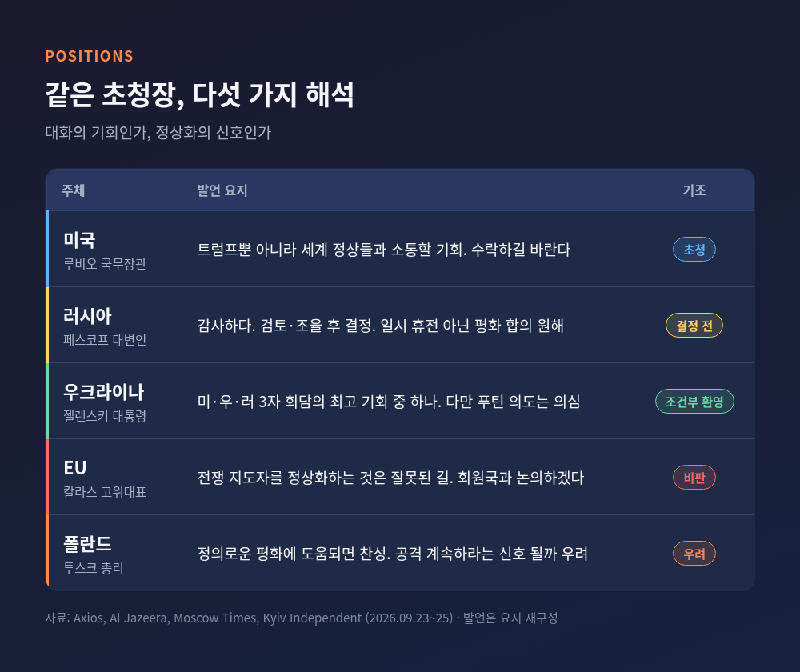
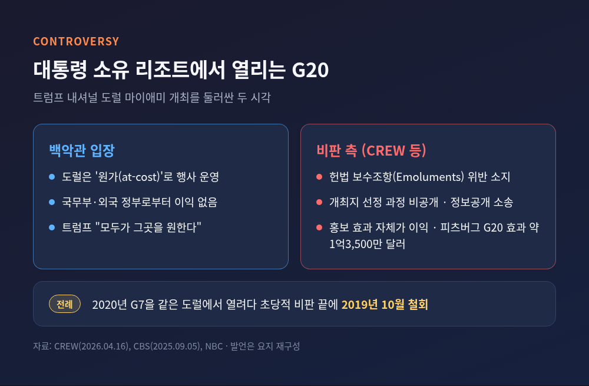
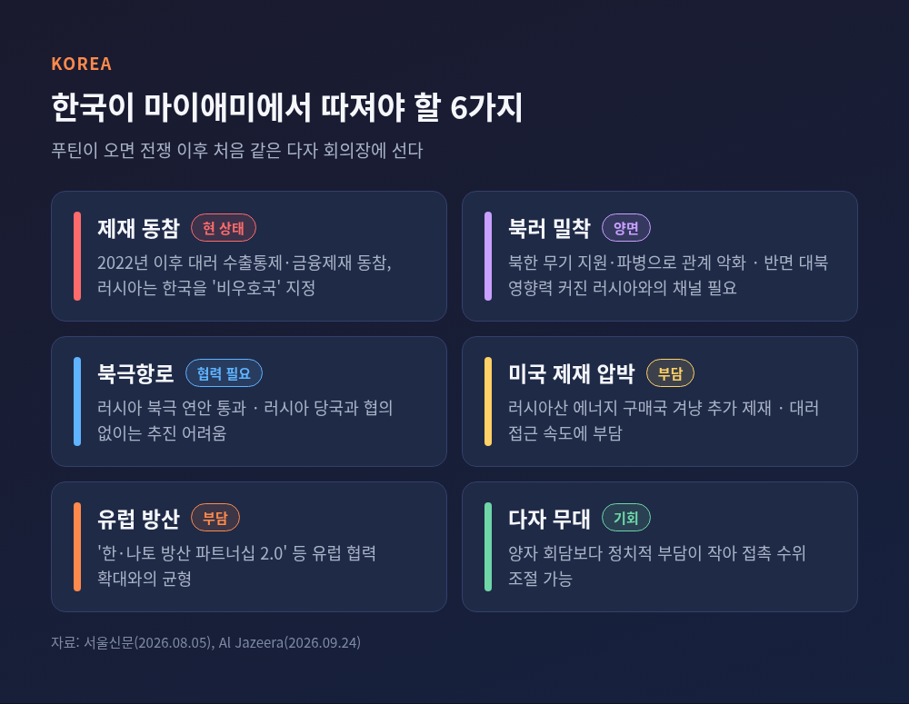
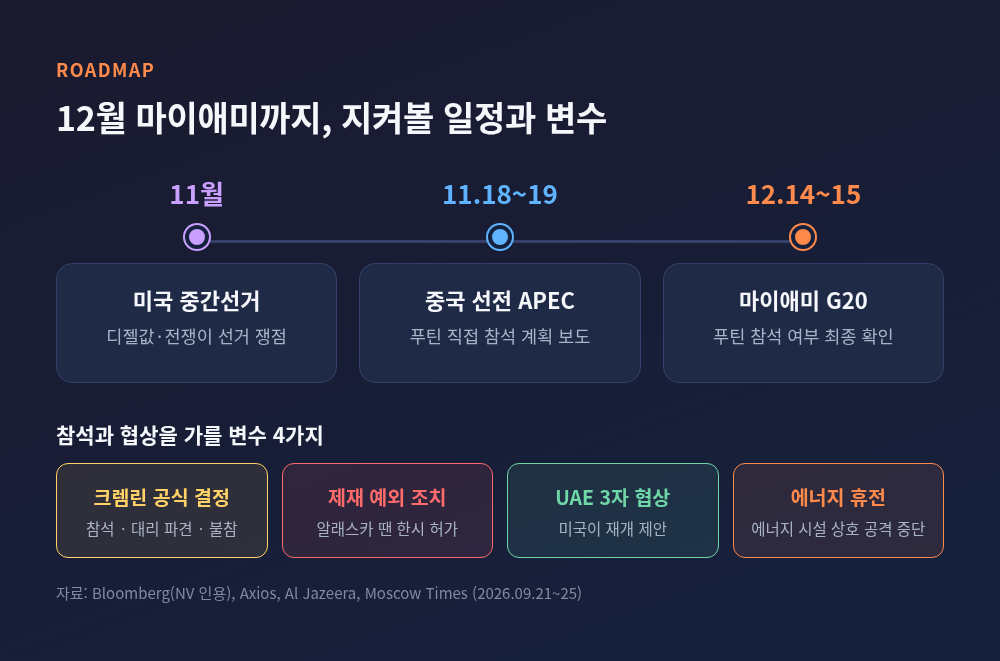

트럼프 푸틴 G20 초청, 12월 마이애미 회의가 종전 협상에 갖는 의미

이번 글에서는 트럼프 대통령이 푸틴 러시아 대통령을 12월 마이애미 G20 정상회의에 초청한 소식을 정리해 보겠습니다.
무엇이 발표됐는지, 왜 파장이 큰지, 각국은 어떻게 받아들였는지, 그리고 한국에는 어떤 숙제가 남는지 차례로 살펴봅니다.
3줄 요약
- 9월 23일 루비오 미 국무장관이 라브로프 러시아 외무장관과 회담한 뒤, 트럼프 대통령이 푸틴을 12월 14~15일 마이애미 G20에 초청했다고 밝혔습니다.
- 푸틴이 오면 2019년 이후 첫 G20 대면 참석이자 2015년 이후 첫 미국 본토 방문입니다. 크렘린은 "감사하다, 검토하겠다"고만 답했습니다.
- 젤렌스키는 3자 회담의 기회라며 반겼고, EU와 폴란드는 '전쟁 지도자의 정상화'를 우려했습니다. 장소가 트럼프 소유 리조트라는 점도 논란입니다.
무슨 일이 있었나 — 유엔총회 복도에서 나온 초청장
발표는 9월 23일(현지시간) 뉴욕에서 나왔습니다.
유엔총회를 계기로 마코 루비오 국무장관과 세르게이 라브로프 외무장관이 마주 앉은 직후였습니다.
루비오 장관은 푸틴 대통령을 G20에 초청했다고 밝혔습니다.
트럼프 대통령뿐 아니라 다른 세계 정상들과도 소통할 기회라는 설명이었습니다.
그러면서 "수락하길 바란다"고 덧붙였습니다(Axios·Al Jazeera 보도).
초청 배경을 묻는 질문에는 트럼프가 사실상 누구와도 만날 의향이 있고, 문제를 풀려면 생각이 다른 상대와도 만나야 한다고 답했습니다(뉴스1).
회의는 12월 14~15일, 플로리다주 도럴의 트럼프 내셔널 도럴 마이애미에서 열립니다.
트럼프 대통령이 소유한 골프 리조트입니다.
미국이 G20 정상회의를 여는 것은 2009년 피츠버그 이후 처음입니다.

왜 중요한가 — 성사되면 '11년 만의 본토 방문'
푸틴 대통령이 이 초청을 받아들이면 몇 가지 기록이 한꺼번에 바뀝니다.
첫째, 2019년 이후 처음으로 G20 정상회의에 직접 나오게 됩니다.
러시아는 여전히 G20 회원국입니다.
하지만 푸틴은 2021년에는 화상으로 참여했고, 2023년 인도 회의에는 라브로프 장관을 대신 보냈습니다.
둘째, 하와이·알래스카를 뺀 미국 본토를 2015년 9월 이후 처음 밟게 됩니다.
당시 그는 유엔총회 70차 회의에 참석해 오바마 대통령과 약 90분간 회담했습니다.
트럼프 1기인 2019년에도 워싱턴 초청이 있었지만 실현되지 않았습니다.
셋째, 트럼프 2기 들어 두 번째 미국 방문이 됩니다.
두 정상은 2025년 8월 15일 알래스카 앵커리지에서 만났지만, 우크라이나 문제에서 합의를 내지 못했습니다.
예전 G20에서 푸틴은 자리를 비우는 사람이었습니다.
이번에는 의장국이 직접 자리를 마련해 두고 기다리는 모양새입니다.

크렘린의 답 — "감사하다, 그러나 결정은 아직"
러시아의 첫 반응은 정중했지만 신중했습니다.
드미트리 페스코프 크렘린궁 대변인은 23일 초청에 감사를 표하며, 결정을 내린 뒤 외교 채널로 세부 사항을 조율하겠다고 했습니다.
다음 날에는 아직 결정된 것이 없다고 다시 선을 그었습니다.
두 정상이 무엇을 논의할지는 "지금 말하기 이르다"고 했고, 러시아가 원하는 것은 일시 휴전이 아닌 평화 합의라는 기존 입장을 되풀이했습니다(Al Jazeera).
눈여겨볼 대목은 발표 이틀 전의 보도입니다.
블룸버그는 9월 21일 크렘린에 가까운 소식통을 인용해, 푸틴이 11월 18~19일 중국 선전 APEC 정상회의에는 직접 가지만 마이애미 G20에는 불참할 가능성이 크다고 전했습니다.
러시아 당국자들 사이에 G20 전 종전 협상 진전에 대한 기대가 거의 없고, 위트코프·쿠슈너 특사에 대한 불만이 커지고 있다는 내용도 함께 실렸습니다.
초청장은 나갔지만 답장은 비어 있는 셈입니다.
참석 여부는 아직 어느 쪽으로도 단정하기 어렵습니다.
우크라이나와 유럽 — 같은 초청, 엇갈린 해석
가장 눈에 띄는 반응은 젤렌스키 대통령에게서 나왔습니다.
그는 24일 이번 G20이 미국·우크라이나·러시아 3자 회담의 기회가 될 수 있다고 했습니다.
미국이 내놓은 "최고의 기회 중 하나"라는 표현도 썼습니다(Kyiv Independent).
유럽 파트너와 중국·인도·중동 국가가 함께 있는 자리라 결과를 내기 좋은 분위기라는 이유였습니다.
젤렌스키와 푸틴은 2019년 12월 파리 노르망디 형식 회담 이후 한 번도 마주 앉지 않았습니다.
크렘린은 정상급 회담을 거부하며 모스크바로 오라는 입장을 고수해 왔습니다.
젤렌스키 역시 푸틴이 3자 회담을 피할 이유를 찾을 수 있다며 의구심을 감추지 않았습니다.
유럽의 시선은 더 차갑습니다.
카야 칼라스 EU 외교안보 고위대표는 초청을 비판하며 다른 G20 회원국들과 논의하겠다고 했습니다.
전쟁을 일으키고 민간인 공격을 지시한 지도자를 정상화하는 것은 잘못된 길이라는 취지였습니다.
도날트 투스크 폴란드 총리는 조건을 달았습니다.
정의로운 평화에 가까워진다면 찬성이지만, 지금은 러시아가 이를 공격을 이어가라는 신호로 받아들일까 걱정된다는 것입니다(Al Jazeera).

쟁점 1 — ICC 체포영장은 왜 변수가 아닌가
푸틴 대통령에게는 국제형사재판소(ICC) 체포영장이 걸려 있습니다.
2023년 3월, 우크라이나 어린이를 러시아로 불법 이송한 혐의입니다.
하지만 마이애미 방문에서는 이 영장이 작동하지 않습니다.
영장 집행 의무는 ICC 설립 조약인 로마규정 당사국에만 있습니다.
미국은 당사국이 아닙니다.
오히려 트럼프 행정부는 ICC에 대한 추가 제재를 준비 중이고, 트럼프 대통령은 유엔총회 연설에서 각국에 ICC 탈퇴를 촉구했습니다(Al Jazeera).
실제 걸림돌은 미국 자신의 제재입니다.
미 재무부는 2022년 전면 침공 직후 푸틴 개인을 제재 명단에 올렸습니다.
알래스카 회담 때도 재무부가 금지 거래를 한시적으로 허가하는 조치를 내야 했습니다(Axios).
여기에 9월 중순 트럼프가 서명한 '린지 O. 그레이엄 러시아 제재법 2026'은 러시아산 에너지 구매자까지 겨냥합니다.
한쪽으로는 제재를 조이고, 다른 쪽으로는 정상회의 문을 여는 이중 신호입니다.
쟁점 2 — 대통령 소유 리조트라는 무대
개최지 자체도 오래된 논쟁거리입니다.
트럼프 대통령은 2025년 9월 G20을 자신의 도럴 리조트에서 열겠다고 발표했습니다.
백악관은 도럴이 '원가'로 행사를 치르며 국무부나 외국 정부로부터 이익을 얻지 않는다고 설명했습니다(CBS).
비판 측은 대통령 사업체로 국제적 관심과 지출이 몰린다는 점을 문제 삼습니다.
미국 헌법의 보수조항(Emoluments Clause)은 대통령이 외국 정부로부터 대가를 받는 것을 제한합니다.
감시단체 CREW는 선정 과정이 공개되지 않았다며 국무부·비밀경호국을 상대로 정보공개 소송을 냈습니다.
2009년 피츠버그 G20의 경제 효과가 약 1억3,500만 달러로 추정됐다는 점을 들어, 원가 개최라도 홍보 효과 자체가 이익이라는 주장도 폈습니다.
전례도 있습니다.
트럼프 1기 때 2020년 G7을 같은 도럴에서 열려다 초당적 비판 끝에 2019년 10월 철회했습니다.
이번에는 서방이 제재한 정상이 초대 명단에 오르면서, 논란의 층위가 하나 더 늘었습니다.

한국에 주는 의미 — 같은 회의장, 다른 셈법
한국은 G20 회원국입니다.
푸틴이 마이애미에 온다면, 한국 정상은 전쟁 이후 처음으로 푸틴과 같은 다자 회의장에 서게 됩니다.
지금의 한러 관계는 조심스러운 탐색 단계입니다.
2022년 침공 이후 한국은 대러 수출통제와 금융제재에 동참했고, 러시아는 한국을 '비우호국'으로 지정했습니다.
북한의 대러 무기 지원과 파병은 관계를 더 얼어붙게 했습니다.
2016~2019년 동방경제포럼에 대통령·총리급을 보내던 한국은, 전쟁 뒤 참석자 급을 대사관 관계자 수준으로 낮췄습니다(서울신문).
그렇다고 문을 완전히 닫기도 어렵습니다.
북러 밀착으로 북한에 대한 러시아의 영향력이 커졌고, 정부가 추진하는 북극항로는 러시아와의 협의가 필요합니다.
푸틴 대통령도 올해 1월 주러 한국대사의 신임장을 받으며 관계 복원을 바란다고 말했습니다.
반면 미국의 대러 제재 강화, 유럽과의 방산 협력 확대는 속도를 늦추는 요인입니다.
서울신문 분석처럼, 다자 무대는 양자 회담보다 정치적 부담이 작습니다.
마이애미가 짧은 인사로 끝날지, 의미 있는 접촉으로 이어질지는 한국이 대미·대유럽 관계와 한러 관계 사이에서 어떤 균형점을 찾느냐에 달려 있습니다.

전망 — 11월 선전, 12월 마이애미
앞으로 석 달의 흐름은 대략 이렇게 그려집니다.
11월 미국 중간선거가 있고, 11월 18~19일 중국 선전 APEC 정상회의가 이어집니다.
푸틴이 선전에 간다는 보도가 사실이라면, 트럼프는 그 무대에서 먼저 신호를 읽게 될 수도 있습니다.
그리고 12월 14~15일 마이애미가 기다립니다.
그 사이 확인할 변수는 네 가지입니다.
크렘린의 공식 결정, 푸틴 방문을 위한 미국의 제재 예외 조치, 미국이 제안한 UAE 3자 협상의 재개 여부, 그리고 에너지 시설 공격을 멈추자는 '에너지 휴전'의 성사 여부입니다.
유럽이 G20 안에서 공동 대응에 나설지도 지켜볼 대목입니다.
한계도 분명합니다.
초청이 곧 협상의 진전을 뜻하지는 않습니다.
알래스카 회담이 보여 주었듯, 두 정상이 마주 앉는 장면과 전쟁이 멈추는 일 사이에는 큰 간격이 있습니다.

정리하면 이렇습니다.
이번 초청은 전쟁을 끝낼 '자리'를 먼저 만들어 보려는 미국의 시도입니다.
그 자리를 기회로 볼지, 면죄부로 볼지는 앉는 나라마다 다릅니다.
"자리가 마련된다고 평화가 오는 것은 아니다"
푸틴이 결국 마이애미에 오겠느냐고 물으신다면, 지금으로선 크렘린의 답장보다 협상장에서 오가는 조건이 먼저 그 답을 알려 줄 것이라고 말씀드리겠습니다.